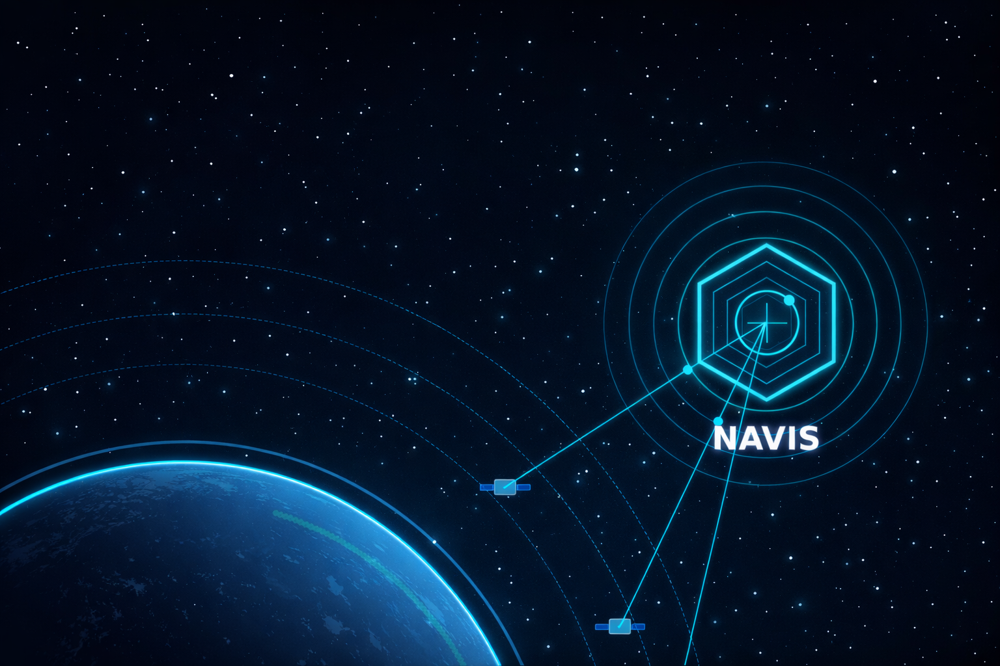

NAVIS is the governance-grade intelligence layer that determines when a satellite should exit orbit — balancing regulatory mandates, stochastic collision risk, disposal reliability, and economic exposure in one structured decision engine.
Low Earth Orbit is scaling rapidly. Constellations are increasing orbital density, regulatory scrutiny is tightening, and insurers are reducing exposure to space risk.
Operators have conjunction alerts and tracking systems — but no structured framework that determines the optimal disposal timing of a satellite.
Today, end-of-life decisions are fragmented across engineering, compliance, and finance — without a unified quantitative model.
Focuses on fuel levels and technical health, often ignoring economic value.
Tracks static rules (e.g., 25-year rule) without dynamic risk assessment.
Models depreciation but lacks orbital context for risk-adjusted valuation.
Result: Disconnected silos leading to fragmented, suboptimal disposal decisions.
NAVIS operates as a deterministic five-layer decision architecture integrating telemetry, regulatory encoding, probabilistic disposal modeling, stochastic collision intensity estimation, and economic exposure optimization into a single auditable output.
Quantifies the financial impact of disposal timing, balancing residual value against liability risk.
Estimates time-dependent collision event intensity using stochastic modeling, incorporating orbital density, exposure duration, and encounter rates.
Models reliability of post-mission disposal maneuvers based on historical data and satellite health.
Explicitly encodes evolving rules (e.g., 5-year vs 25-year) into the decision logic.
Ingests telemetry, fuel reserves, and operational status from the satellite bus.
NAVIS is not an operational control system. It operates above flight dynamics software and SSA feeds as the governance decision layer.
By transforming orbital sustainability from guideline-based policy into quantifiable stochastic risk governance, NAVIS establishes a new infrastructure category: End-of-Life Decision Intelligence.
NAVIS is grounded in rigorous academic and industry research across multiple disciplines.
Join the consortium defining the governance infrastructure for the next era of space operations.